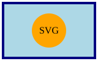

Externe Bilder
SVG extern:

PNG extern:

JPEG extern:

ÄÖÜ äöü ß € „deutsche Anführungszeichen“ – Gedankenstrich — langer Strich
Müller, Schröder, Größe, Straße, Büro, Café, naïve, déjà-vu
Sonderzeichen: © ® ™ µ ½ ¼ ¾ ± × ÷
Dieser Text sollte rechts neben der Float-Box laufen. Danach sollte er unterhalb weitergehen, wenn nicht mehr genug Platz vorhanden ist. Damit kann man testen, ob TclLiteHTML float, margin und Textumfluss korrekt behandelt.
Dieser Absatz steht nach clear: both.
SVG extern:

PNG extern:
JPEG extern:
| Nr | Name | Ort | Text | Status |
|---|---|---|---|---|
| 001 | Müller | Köln | UTF-8 äöüß € | OK |
| 002 | Schröder | Düsseldorf | Test mit Umlauten | OK |
| 003 | Meier | München | Breiter Tabelleninhalt | OK |
| 004 | Fischer | Vreden | Kurzer Text | OK |
| 005 | Weber | Berlin | Weitere Zeile | OK |
| 006 | Hoffmann | Hamburg | Tabellentest | OK |
| 007 | Schäfer | Bremen | äöü ÄÖÜ ß | OK |
| 008 | König | Aachen | Euro-Zeichen € | OK |
| 009 | Groß | Mainz | Straße, Größe | OK |
| 010 | Jäger | Leipzig | Letzte Beispielzeile | OK |